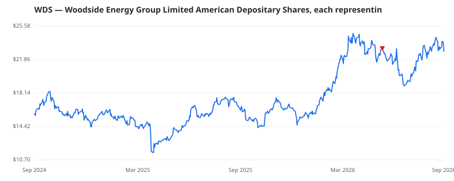

bullish · bearish · n/a — dots: price>SMA10 · SMA10>SMA50 · SMA50>SMA200 · up>down volume (20d)
Other · large cap

Incorporated in 1954 and named after the small Victorian town of Woodside, Woodside's early exploration focus moved from Victoria's Gippsland Basin to Western Australia's Carnarvon Basin. First LNG production from the North West Shelf came in 1984. BHP Billiton and Shell each had 40% shareholdings before BHP sold out in 1994 and Shell sold down to 34%. In 2017 Shell sold its entire shareholding. Woodside is one of the most LNG-leveraged companies globally. · website
| Fund | Fund alpha vs SPY | Position | % of book |
|---|---|---|---|
| U S GLOBAL INVESTORS INC | +7% | $2M | 0.2% |
| BAROMETER CAPITAL MANAGEMENT INC. | +16% | $1M | 0.4% |
Hedge data: SEC EDGAR 13F · ranked funds beat SPY in >50% of their quarters · fund alpha = mirror-portfolio return minus SPY.